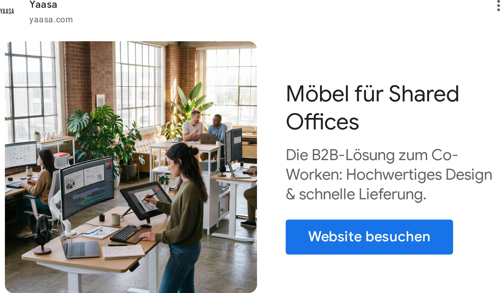
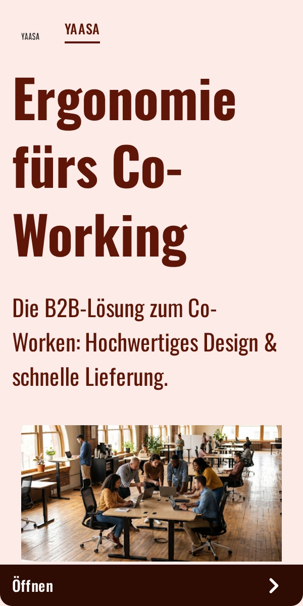
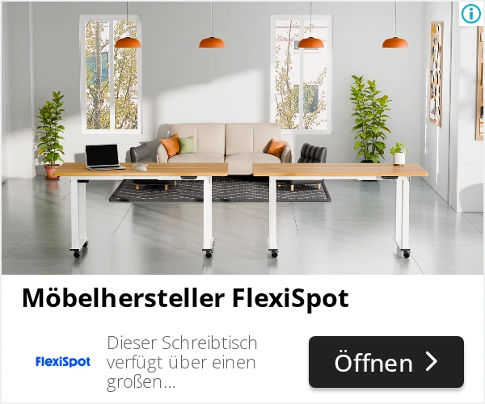

FW-C08 · 两个人，各自合适的工作高度
修订顺序：13 / 24 · E · 买前证据。顺序为策划测试安排，尚非素材效果排名。
产品：Dual Ultra X 白色 140×70 cm。
用户：制作场景假设（身份未验证）：小型工作室或两人居家团队。
需求：两张桌位能够同时用于不同任务和姿势。
卖点：独立桌位的坐站调节。
机会类型：四：跨场景与跨产品组合。
参考什么：参考真实多人工作场景及多桌位的空间关系。
为什么：德国居家办公背景与P6电动调节支持这个用法；两人团队购买量未知。
如何差异化：两个独立的P6桌位一坐一站，不把桌子画成可拼接或联动。
场景：临街小工作室，桌子相互错开，墙上为实际项目板；通路和椅子后退空间可见。
构图：从房间侧门拍广角全景，前桌坐姿、后桌站姿；禁止超广角拉长桌板或合并结构。
人物及动作：两名约30–45岁的同事分别看电脑和翻资料，不对镜头摆拍。
渠道：Meta Feed；面向办公室意图的Google PMax图片资产。比例：1.91:1、4:5。德语主题：Zwei Arbeitsplätze. Individuell eingestellt.。
资格依据：白桌白架140×70在售变体；双电机；完整尺寸和SKU已记录。
不能添加的宣称：同P3的动态/静态承重冲突；不要沿用旧记忆中的承重数字。
证据边界：有A类实际图片参考；具体原创场景和转化效果尚待测试。图片参考体现视觉方法，不构成竞品效果数据。需求证据：N1+N2+P6；团队场景为测试假设。
参考原图

YAAS-GOOG-016YAAS-GOOG-016 · Yaasa · Google · 完整导出广告画面
原广告来源。德国日期筛选列表已核验；单条首次/最后日期未读取。

YAAS-GOOG-015YAAS-GOOG-015 · Yaasa · Google · 完整导出广告画面
原广告来源。德国日期筛选列表已核验；单条首次/最后日期未读取。

FLEX-GOOG-151FLEX-GOOG-151 · FlexiSpot · Google · 完整导出广告画面
原广告来源。德国日期筛选列表已核验；单条首次/最后日期未读取。